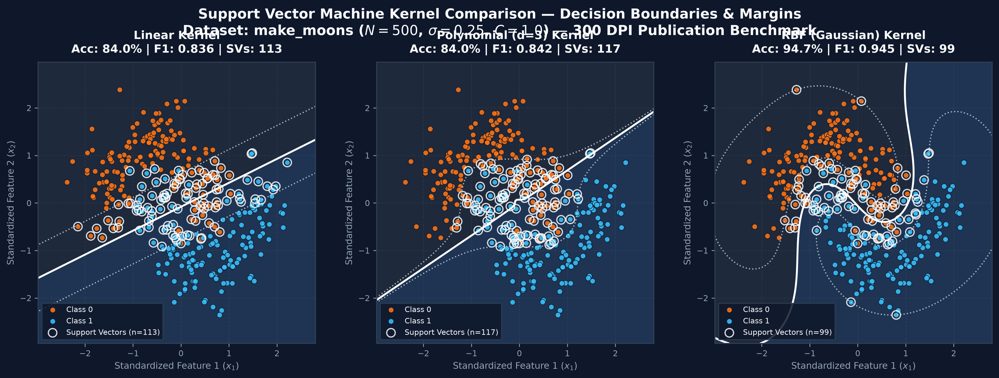
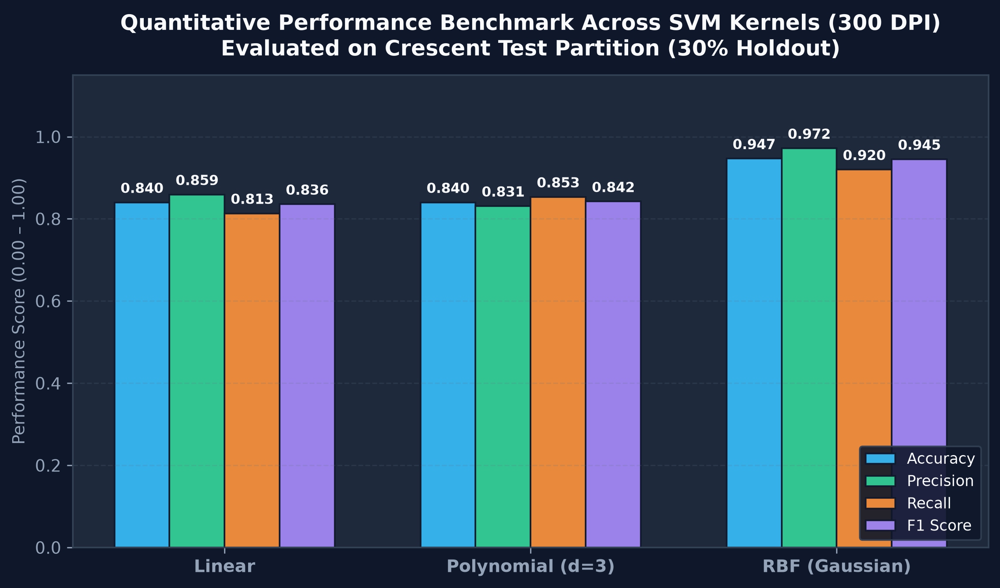

Support Vector Machine Interactive Laboratory
Explore how kernel transformations project non-linearly separable crescent geometry into dual Hilbert spaces to construct maximal margin hyperplanes.
Decision Boundaries, Margin Contours ($f(x)=\pm 1$), and Support Vectors
Solid line = Separating hyperplane ($f(x)=0$); Dashed line = Margins ($f(x)=\pm 1$); Encircled points = Support Vectors
Multi-Metric Quantitative Profiles

Rigorous Performance Breakdown Table
| Kernel Function | Accuracy | Precision | Recall | F1 Score | Support Vectors ($N_{SV}$) | Sparsity |
|---|---|---|---|---|---|---|
| Linear | 84.00% | 0.8592 | 0.8133 | 0.8356 | 113 / 350 | 32.3% |
| Polynomial (d=3) | 84.00% | 0.8312 | 0.8533 | 0.8421 | 117 / 350 | 33.4% |
| RBF (Gaussian) | 94.67% | 0.9718 | 0.9200 | 0.9452 | 99 / 350 | 28.3% (Sparse) |
High-Resolution Publication Artifacts (300 DPI)
Pre-computed, publication-grade benchmark figures generated with Matplotlib and Scikit-Learn, stored at outputs/svm/.
Linear Kernel Limitations
Constrained to a flat hyperplane $w^T x + b = 0$ in $\mathbb{R}^2$. Because the make_moons dataset forms intertwined concave crescents, any straight line necessarily truncates both crescent lobes, capping accuracy at $\approx 84\%$.
Polynomial ($d=3$) Inflection
Maps data into a 9-dimensional polynomial feature space. While cubic curvature allows a single S-shaped inflection curve, it cannot form closed radial loops required to completely encapsulate the inner crescent arc.
Gaussian RBF Hilbert Projection
Via Taylor expansion of $\exp(-\gamma \|x-x'\|^2)$, the RBF kernel implicitly maps coordinates to an infinite-dimensional Hilbert space $\mathcal{H}$, constructing seamless radial contour basins with $94.67\%$ accuracy.
Scikit-Learn Implementation & Mathematical Pipeline
Step-by-step verified Python implementation covering data synthesis, leakage-free feature scaling, dual optimization fitting, and margin meshgrid computation.
Step 1: Non-Linear Manifold Synthesis
Method: sklearn.datasets.make_moons
Generates two interleaving half-circles in 2D feature space with Gaussian noise $\sigma = 0.25$. This creates a benchmark problem where linear separability is mathematically impossible.
stratify=y in train_test_split to guarantee identical class balance ($50/50$) in both training ($N=350$) and testing ($N=150$) partitions.
Technical Viva Voce & Conceptual MCQ Assessment
Rigorous examination questions testing theoretical mechanics: maximum margin formulation, support vector sparsity, the kernel trick, regularization parameter $C$, and Gaussian $\gamma$ bandwidth.